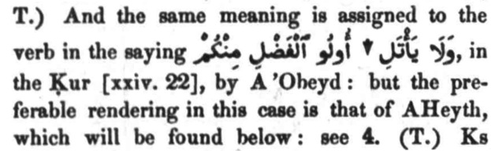
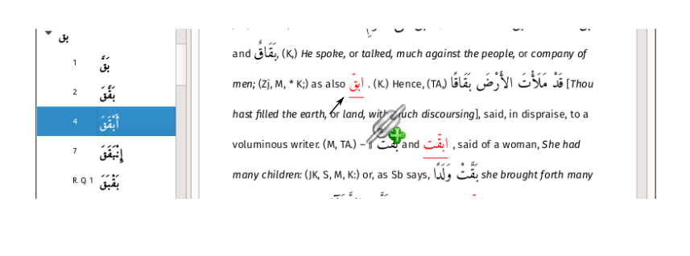
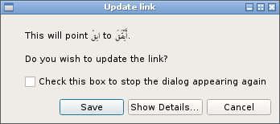

Editing the text
Cross references
Lane indicated cross-references in the text with a down-arrow, as explained in the Preface page xxiv :
but every word ... explained in a paragraph headed by another word is also mentioned by itself, or accompanied by a word or words nearly resembling it in form, with a reference to that paragraph. (In order to facilitate the reference, an arrow-head (↓) is inserted to render conspicuous a word explained in a paragraph headed by another word.)
As in the following example:

In this application, the cross-references have been converted to clickable links. However, not all links have been resolved by software: links with an identified target are blue, unresolved links are red.
[There are 36,031 cross-references in the entire lexicon, of which 21,322 have been resolved.]
Fixing a cross-reference
The user can repair a broken link manually by doing the following:
-
Break content-linking using the icon on the status bar
-
Find the target of the link in the contents panel
-
Left-click and drag the target onto the link and release the mouse button
When dragging the target an icon is displayed alongside the cursor:

On releasing the cursor on the target, a dialog appears:

This process can be repeated any number of times.
Exporting and Importing fixes
If the user has repaired broken links, these fixes will be removed if the software is re-installed or an updated database is installed.
For this reason, links should be saved to a file using the Tools -> Export links menu option prior to any software updates and then reloaded using Tools -> Import links.